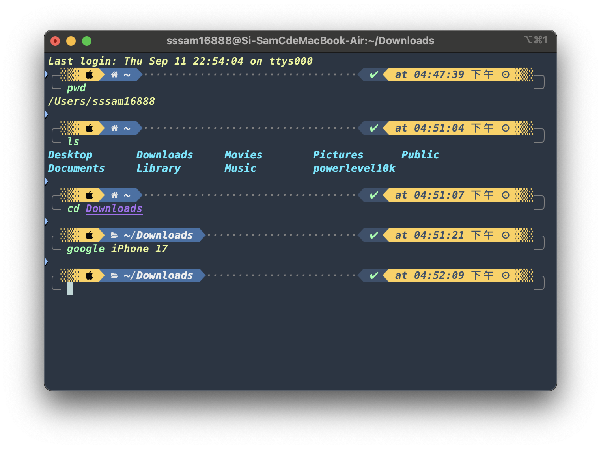
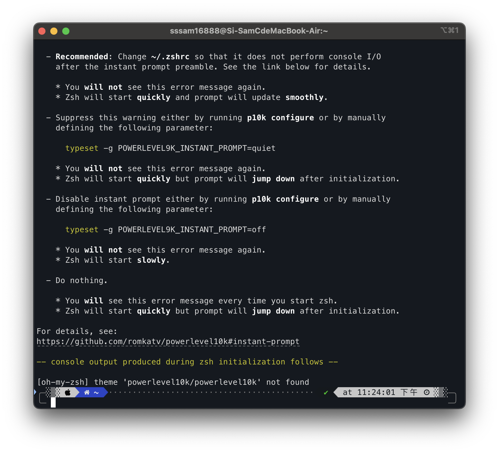
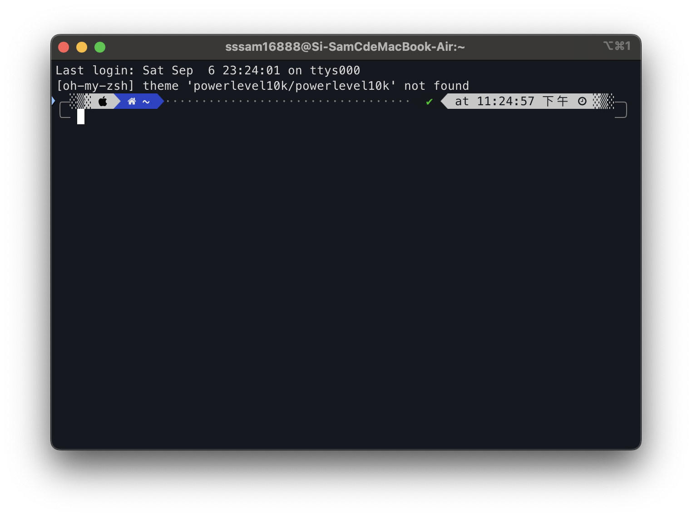
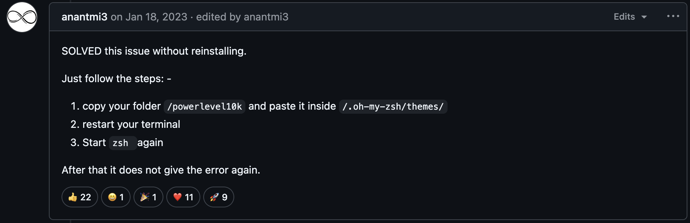
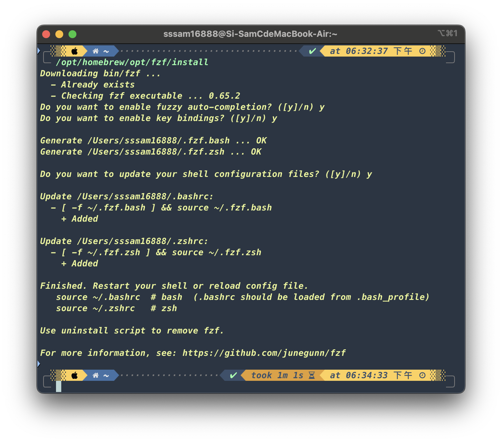

一.前言
我原先是按照下方文章更改內建的終端機，後來發現指令碼無法變色(無法提高易讀性)，
macOS 終端機美化教學 4步驟打造絢麗介面提升工作效率
所以又改用iTerm2(另一種終端機)。
雖然安裝過程比較冗長且麻煩，但我很喜歡，也很滿意完成的結果。

二.安裝流程(落落長而且有點麻煩XD)
我一開使是看這部YT影片(大致說明客製化iTerm2的過程)
[ 分享 ] 強化你的 Macbook 的 Terminal 終端機 ！ 更改漂亮主體跟背景顏色！ 我用 oh my zsh 就能做到 ！ 也能裝強大插件讓終端機更好用 ！
該影片的內容如下(按順序)：
1. 打開終端機安裝Homebrew
可以參考下方影片(這是我另外找的)，詳細解說安裝Homebrew的過程。
在macOS安裝Homebrew，測試brew套件管理工具安裝軟體
其中有一段安裝過程會跑比較久，請耐心等候，不是你的原生終端機當掉喔XD
2. 打開終端機用Homebrew安裝iTerm2
3. 下載iTerm2的顏色方案(Color Scheme)壓縮檔＆設定iTerm2顏色方案
4. 用iTerm2安裝oh my zsh
5. 更改zsh主題
方法1：前往本機的隱藏資料夾打開.zshrc文字檔編輯(上方第二個強化Macbook終端機的影片內有詳述)
方法2：用iTerm2下指令vim ~/.zshrc，然後打開.zshrc文字檔進行編輯(上方第一個瘋先生終端機美化教學的網址內有詳述)。
6. 安裝zsh套件(上述影片僅有簡易示範)
影片裡面我唯一有安裝的是google套件
7. 自訂常用操作快捷鍵
因為我想用的主題是與Ｍac最搭的powerlevel10k，而且上述影片沒有說明這個主題，
因此這部影片我只看到更改zsh主題，然後又另外搜尋powerlevel10k的相關文章。
最後我是選擇參考下方這篇文章。
如何使用Zsh + Powerlevel10k 打造Terminal
我是從4.安裝powerlevel10k開始往下閱讀，
比較特別的地方是需要用終端機下指令安裝這個主題，然後會安裝Meslo Nerd Font(一種字體)以及完成一系列的樣式設定選擇題，安裝主題過程請詳見該篇文章。
三.中途(可能)會遇到的兩個問題
這是安裝完powerlevel10k之後重開iTerm2的畫面

1.如何消除錯誤訊息？
方法1. 用iTerm2下指令p10k configure
執行之後，你就要重新安裝Meslo Nerd Font(一種字體)以及完成一系列的樣式設定選擇題(耗時)。
方法2. 重新定義參數「 typeset -g POWERLEVEL9K_INSTANT_PROMPT 」的賦值
執行之後，你就不用重新設定p10k主題(省時)。
方法1我沒試過，我是用方法2。
又因為我覺得錯誤訊息中方法2的說明不夠清楚，所以我另外Google搜尋方法2的相關資訊。
我是Google錯誤訊息中某一行文字並刪掉一些不重要的字(讀者可以思考看看我是搜尋什麼)，搜尋的第一個結果是AI摘要。
針對AI給出的摘要我們要抱持懷疑的態度，在試過AI給出的解方之前不用先急著否定它，先試再說Just try it!
試過之後，AI給出的解方真的可行，證明這一次AI給出的方法是對的！
那要怎麼做？很簡單
先關掉iTerm2，然後打開文字檔「 .zshrc 」，
在最上方(位置隨意，方便查閱即可。)加入下方這一行
「 typeset -g POWERLEVEL9K_INSTANT_PROMPT＝off 」 ，
接著儲存文字檔( 按 cmd + s )，最後重開iTerm2就會呈現如下畫面。

順帶一提，如果將off改成quiet，也可以正常執行終端機。
我覺得兩種參數值的執行速度沒有差別，不像錯誤訊息中所說參數值用quiet會比較快。
2.如何消除「 [oh-my-zsh] theme ‘powerlevel10k’ not found 」這一句話？
這次我大方一點直接說，我就是原封不動地Google標題雙引號裡面的內容。
點擊第一個Github issues連結(如下所示)進去找解答。
powerlevel10k之神奇解法
很幸運地，找到了一個簡易、快速而且可行的解方，剛好這位分享解方的外國前輩獲得最多的按讚數。

非常簡單，按照他說的前2個步驟，
然後重開iTerm2就會呈現乾淨的畫面(沒有[oh-my-zsh] theme 'powerlevel10k' not found這一行的圖3)。
四.iTerm2介面調色與預設樣式
這個是在你選定顏色方案之後做的事情
先打開iTerm2晾在一旁，可以打一些基本指令，方便之後調色。
接著按Session => Edit Session => Colors
裡面會有很多預設的長方形色塊，這些都可以改成其他顏色。
我沒有每個都去研究，我能確定的是Color Preset下方的 Defaults可以更改iTerm2的背景和抬頭顏色，
然後ANSI Colors的某一些顏色是iTerm2介面上某些區域的顏色，試著去調色就會比較清楚每個顏色對應的區域。
在你完成調色之後，先完成以下預設動作：
按Session => Edit Session => General，
然後在該頁面按下「 Copy Current Settings to Selected Profile 」，
最後按Replace。
之後你每次都可以使用預設樣式的iTerm2。
五.oh-my-zsh套件簡易說明(我有安裝的套件)
1.zsh-autosuggestions(自動提示指令)
當你輸入指令碼時，會以灰字提示上一次使用的相同前綴指令碼，按右鍵可以自動補全。
2.zsh-fast-syntax-highlighting(快速語法高亮)
使指令碼、參數、路徑、有效與無效指令碼都有專屬的顏色
3.zsh-autocomplete(自動補全指令)
當你輸入指令碼時，會在下方列出所有相同前綴的指令碼，
按Tab鍵選定左上角第一個指令碼，按向下鍵可以自行選定其他指令碼。
4.fzf(Command-line fuzzy finder 命令列模糊搜尋器)
fzf又稱為終端機的檔案總管，是一種任意類型資料的互動式過濾程式，
只需輸入部分關鍵字元，即可快速找到你要的資料。
fzf的詳細介紹可以參考如下網站
12 - fzf - 檔案與目錄模糊搜尋指令工具
這邊稍微說明上方網站漏掉的部分 - 「如何進行按鍵綁定與模糊補全設置？」
先用iTerm2下指令brew --prefix fzf
即可取得fzf的安裝目錄(下方截圖綠色那一行)
接著輸入安裝目錄並按Enter執行，然後回答三個問題(都按y)即可完成設置。

六.心得
我是在鋰學院看終端機教學影片前半部之後才知道iTerm2這個酷東西，既然我決定轉職後端工程師，而且以後幾乎每天都會用到終端機，我為何不用個性化，而且可以隨時隨地隨心情調整樣式的終端機呢XD？
雖然花了將近15個小時才搞定好(每天花兩個多小時，搞了一週。)，但獲益真的真的真的良多。
有哪些獲益呢？
1. 熟悉終部分終端機的基本操作
2. 提升Ｈuli前輩所說的四大核心能力(我就不多說了)
3. 提升英文閱讀能力